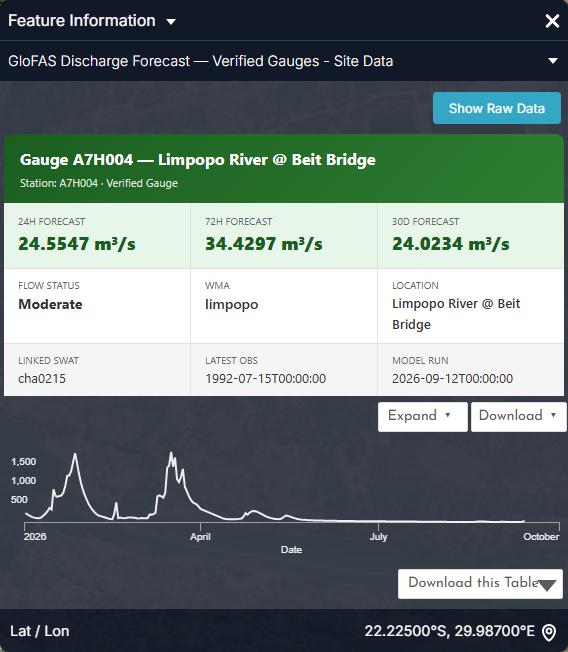
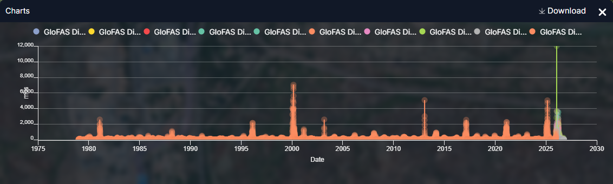
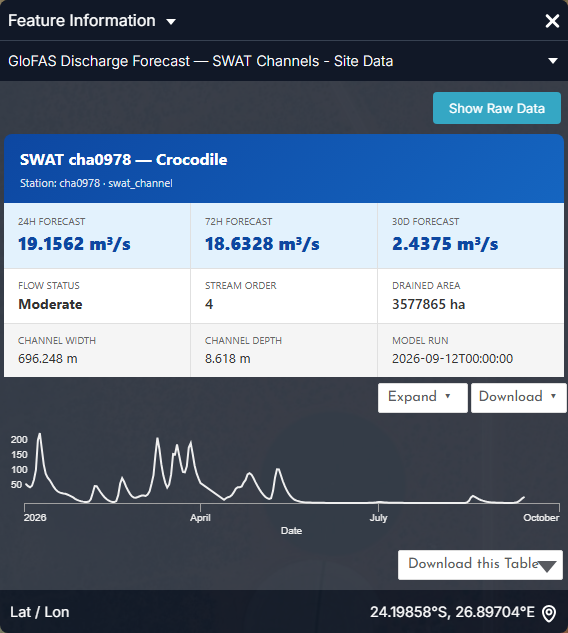
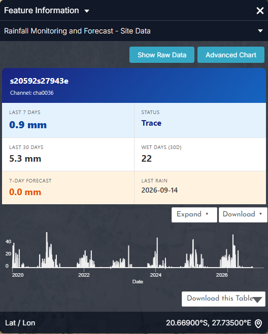
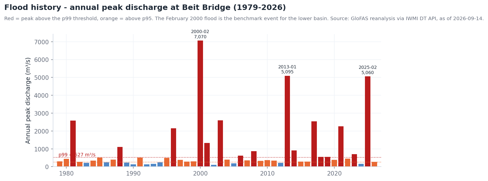
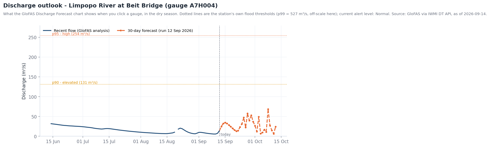
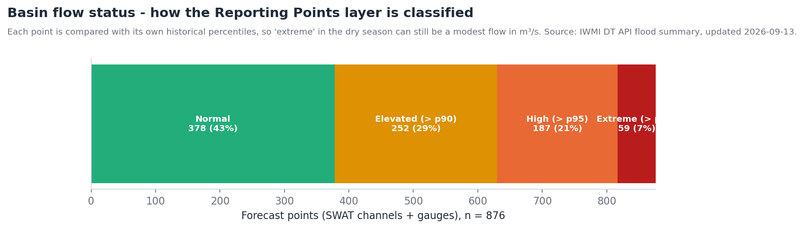

Floods¶
The question¶
A disaster-management officer, a dam operator or a basin authority needs three answers as an event develops: is a flood coming, where will the rivers peak, and who and what is exposed — and afterwards, how does this event compare with the past.
| Who | Decision | When they look |
|---|---|---|
| National / provincial disaster management (INGD, NDMC, DCP, CPU) | Pre-position teams, issue warnings, open shelters | Daily in the wet season (Nov–Mar), hourly during an event |
| Dam operators (Massingir, Loskop, De Hoop…) | Pre-release or hold storage ahead of forecast inflow | Each GloFAS model run (daily, 00:00 UTC) |
| LIMCOM and national hydrology services | Cross-border notification (Botswana → Zimbabwe/South Africa → Mozambique) | On any High or Extreme reporting point |
| Humanitarian and insurance analysts | Size the affected population and assets | Post-event, within days |
At a glance — the basin on 13 September 2026
- 876 forecast points are classified daily: 378 Normal, 252 Elevated, 187 High, 59 Extreme.
- Limpopo at Beit Bridge (A7H004): alert level Normal, 24.6 m³/s forecast for the next 24 h; the station's flood thresholds are p90 = 131, p95 = 254 and p99 = 527 m³/s.
- Benchmark events in the 1979–2026 record at Beit Bridge: February 2000 (7,070 m³/s, a ~1-in-49-year peak), January 2013 (5,095 m³/s) and February 2025 (5,060 m³/s).
How the workflow fits together¶
flowchart TD
A[Rain forecast<br/>Accumulated Precipitation 10-day<br/>Precip. Prob. > 150 mm] --> B[River forecast<br/>Flood Summary Days 1-3 / 4-10<br/>Reporting Points % Exceedance]
B --> C{Any point<br/>High or Extreme?}
C -- no --> A
C -- yes --> D[Click gauge<br/>GloFAS Discharge Forecast chart]
D --> E[Confirm on the ground<br/>GPM IMERG · MODIS / VIIRS NRT Flood]
E --> F[Exposure<br/>Population · Settlements LIMIS<br/>100-year Flood Hazard]
F --> G[Situation report<br/>Story + Share / Print]
G --> H[After the event<br/>Rapid Flood Mapping · Flood Frequency 2001-2024]Data you will use¶
| Dataset | Where in the catalogue | What it tells you | Updates |
|---|---|---|---|
| GPM IMERG Precipitation Rate (Daily) | Flood Monitoring & Early Warning → Real-Time Flood Detection | Yesterday's satellite rainfall — the trigger | Daily, ~1-day lag |
| Accumulated Precipitation (10-day) · Precipitation Prob. > 50 / 150 / 300 mm (10-day) | → Discharge Forecasting (GloFAS) | How much rain is forecast, and how likely extreme totals are | Daily model run |
| Flood Summary Days 1–3 / 4–10 / 11–30 | → Discharge Forecasting (GloFAS) | Where river flooding is forecast, by lead time | Daily |
| Reporting Points (% Exceedance) · 5-Year / 20-Year Exceedance Prob. (30-day) | → Discharge Forecasting (GloFAS) | Probability that river points exceed flood thresholds | Daily |
| GloFAS Discharge Forecast – SWAT Channels · – Verified Gauges | → Discharge Forecasting (GloFAS) | Forecast hydrographs at 1,436 channels and 363 gauges (click for a chart) | Daily |
| MODIS NRT Flood (1-Day) · VIIRS NRT Flood (1-Day) | → Real-Time Flood Detection | Water actually observed on the ground today | Daily (optical) |
| Rapid Flood Mapping (1 km extent) · Rapid Impact Assessment | → Impact & Inundation | Event extent and first impact estimate | Per event |
| 100-year Flood Hazard (Climatology) · 20 / 50-Year Flood Lines – Lower Limpopo (LIMIS) | → Flood Hazard & Exposure | Where floods are expected to reach — planning baselines | Static |
| MODIS Flood Frequency (2001–2024) · MODIS Flood Exposure – Longterm · Year 2000 Flood Inundation Boundaries (LIMIS) | → Flood Hazard & Exposure | Historical footprint, including the landmark 2000 flood | Static |
| Population · Settlements (LIMIS) | Socio-Economic Profile | Who is in the way | Static |
| Dams & Reservoirs Basin Level Estimates | → Supporting Hydrological Data | Storage that may attenuate — or release — the flood wave | Weekly-to-monthly |
Walkthrough¶
Before the event — outlook (lead time 3–30 days)¶
- Explore data →
Accumulated Precipitation (10-day)→ Add to the map, then add Precipitation Prob. > 150 mm (10-day). Large probabilities over the upper catchments (eastern Botswana, the Gauteng–Limpopo headwaters, the Zimbabwe highveld) mean the lower basin should prepare — travel time from Beit Bridge to Chókwè is on the order of a week. - Add Flood Summary Days 1–3, then 4–10, and toggle between them with the Workbench switches: the flood signal should propagate downstream as lead time grows. If it does not, the rain is forecast to fall on dry soils and empty channels and may be absorbed.
- Add Reporting Points (% Exceedance) and click a point on the map. The Feature Information panel gives the exceedance probability; use Show Raw Data for the numbers.
During the event — observe and confirm (lead time 0–3 days)¶
- Add GPM IMERG Precipitation Rate (Daily) and MODIS NRT Flood (1-Day). Where rain fell yesterday and standing water appears today, the forecast is verifying. An empty IMERG layer means no rain, not missing data.
- Add GloFAS Discharge Forecast – Verified Gauges and click the gauge nearest the community of concern — for the main stem use A7H004 Limpopo River @ Beit Bridge, A5H006 (Botswana border) or the Olifants gauges B7H015 / B7H026 in Kruger. The chart shows forecast discharge for each lead time against the station's own thresholds (see the chart below).
- Expand the gauge's card in the Workbench and lower the opacity of the flood layers to ~60 % so the basemap stays readable underneath.
Exposure¶
- Add Population and Settlements (LIMIS) beneath the flood layers (drag to reorder in the Workbench). Use Compare with 100-year Flood Hazard (Climatology) on one side and the forecast footprint on the other to see whether the event is within or beyond the design baseline.
- For the Lower Limpopo (Chókwè–Xai-Xai) add the 20 / 50-Year Flood Lines – Lower Limpopo (LIMIS); anything forecast beyond the 50-year line is exceptional and justifies evacuation planning.
After the event¶
- Add Rapid Flood Mapping (1 km extent) and Rapid Impact Assessment, and compare the mapped extent with MODIS Flood Frequency (2001–2024) and the Year 2000 Flood Inundation Boundaries (LIMIS) to rank the event historically.
- Capture the key scenes as a Story (one per phase: outlook, event, exposure, aftermath) and Share / Print for the situation report.
Reading the charts¶
The figures below are the portal's own charts, captured from the Feature Information panel (click a feature) and from the Charts dock that opens with the panel's Expand button. Every station, dam and site chart in the portal follows the same pattern: a summary card, a preview chart, Expand to enlarge, Download for the CSV.


- Read the three numbers first: 24.6 → 34.4 → 24.0 m³/s means a small rise this week, then recession — Moderate status, no alert. In the wet season the same card can read 500 → 1,500 → 900.
- Model run is the date to quote in a situation report; Linked SWAT (cha0215) is the channel to open in the SWAT Extraction Tool.
- The preview chart shows this year's daily flow: the two peaks near 1,500 m³/s (February and late March 2026) are the wet-season pulses that shape the annual maxima history.


- The dock shows every archived forecast and the reanalysis on one axis: the 2000 (≈7,000 m³/s), 2013 and 2025 (≈5,000 m³/s) floods stand out immediately.
- Hover a point to read the value and date; drag to zoom into a season; Download gives the CSV with one column per lead time.
- Compare the current year's forecast spikes (right edge) against those historical peaks to judge severity — a forecast of 2,500 m³/s at Beit Bridge is a top-ten event.


- Channel points fill the gaps between gauges: 1,436 channels versus 363 gauges. A channel 8.6 m deep and 696 m wide carries 19 m³/s without notice; a first-order tributary would not.
- 30D forecast 2.4 m³/s against 19 m³/s today shows the dry-season recession — the forecast is for the flow to fall.


- This is the trigger layer for the flood workflow: when 7-day forecast jumps to tens of millimetres over headwater channels, open the GloFAS points downstream.
- Expand shows daily rainfall since 2020 with the forecast in green — the wet-season clusters (Dec–Feb) are where flood peaks originate.
Longer-term context (charts derived from the same API data)
These are not portal screens: they were rendered from the same series with tools/use_case_charts.py to show what the portal's series look like over decades.






Indicators and what to do¶
| Indicator | Where to read it | Threshold | Typical action |
|---|---|---|---|
| 10-day accumulated rainfall over the headwaters | Accumulated Precipitation (10-day) | > 150 mm with probability > 50 % | Alert downstream authorities; check reservoir levels |
| Reporting point exceedance | Reporting Points (% Exceedance) | > 50 % for the 5-year threshold | Pre-position; verify with the gauge chart |
| Gauge forecast vs threshold | GloFAS gauge chart | Crosses p95 within 3 days | Issue warning for that reach |
| Gauge forecast vs threshold | GloFAS gauge chart | Crosses p99 within 3 days | Evacuate low-lying settlements; dam pre-release decisions |
| Observed water where none is expected | MODIS / VIIRS NRT Flood (1-Day) | New water outside Waterbodies footprint | Confirm the event; task rapid mapping |
| Forecast footprint vs planning baseline | Compare with 100-year Flood Hazard | Beyond the 50-year flood line | Exceptional event; humanitarian escalation |
Worked example — a dry-season check (September 2026)¶
- Open GloFAS Discharge Forecast – Verified Gauges, click A7H004 near Beit Bridge. The chart shows ~10–35 m³/s for the coming month — an order of magnitude below p90 (131 m³/s). Normal.
- Switch on Reporting Points (% Exceedance). A cluster of Extreme points sits on the Elefantes/Singuédzi below Massingir and on the Steelpoort. Click one: the Elefantes channels read ~45 m³/s against a p99 of ~39 m³/s. That is Massingir releasing water, not a storm — the dam is at 90 % and drawing down for irrigation (see Reservoir monitoring).
- Add GPM IMERG Precipitation Rate (Daily): blank. No rain fell yesterday, which confirms the reading.
- Nothing to escalate; capture the view as a Story scene titled "Baseline — dry season" so that wet-season scenes can be compared against it.
Situation-report checklist¶
- Date/time of the GloFAS model run quoted (shown on the gauge chart)
- Rainfall outlook: 10-day totals and probability over each headwater region
- Reaches forecast High / Extreme, with lead time and peak estimate
- Observed confirmation (IMERG yesterday, NRT flood today)
- Exposed settlements and population inside the forecast footprint
- Reservoir status upstream (storage %, likely releases)
- Comparison with 2000 / 2013 / 2025 benchmark events
- Share link to the Story reproducing the map
Limits to keep in mind¶
- IMERG shows nothing on dry days — an empty layer is not a broken layer. It is also near-real-time with a lag; check the date in the timeline.
- NRT flood detection from MODIS/VIIRS is daily, optical, and misses water under cloud and vegetation; use it to confirm, not to rule out.
- GloFAS is a global model downscaled to basin channels; verified gauges are the anchor — trust channel forecasts more where a gauge agrees. Thresholds are statistical (percentiles of the station's own record), not surveyed flood levels.
- The flow-status classes are relative: Extreme at a small channel can be a few m³/s. Always read the discharge value.
- Several LIMIS layers are historical snapshots (e.g. the 2000 flood); they do not update.
Related¶
Reservoir monitoring · Droughts · Map Tools — Compare · Feature information